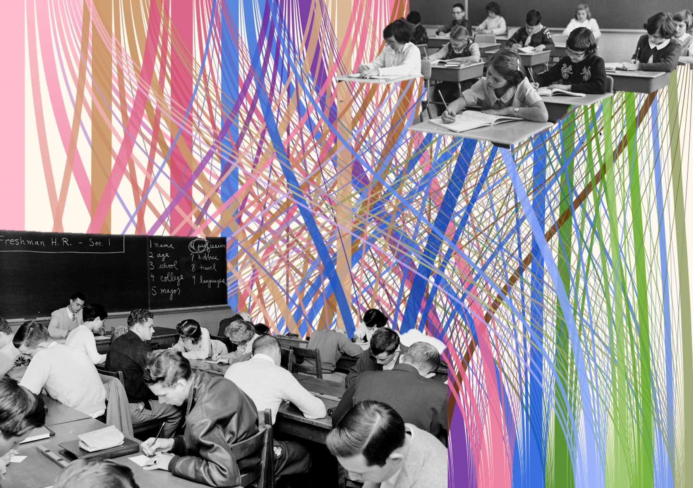

School Dicipline Areas Research

In collaboration with my colleagues at ITMO University’s Laboratory of Intelligent Systems and Applications
we have conducted a study of academically excellent school students and their discipline areas of choice.
The main route of the research is applying statistical methods to the dataset of results of federal-level contests in all school subjects.
My contribution to the project was this exploratory data story (in Russian)
that lets one get acquainted with collected data and main results of the study.
Link above leads to the data story's own webpage and below you can see it in the slides format.